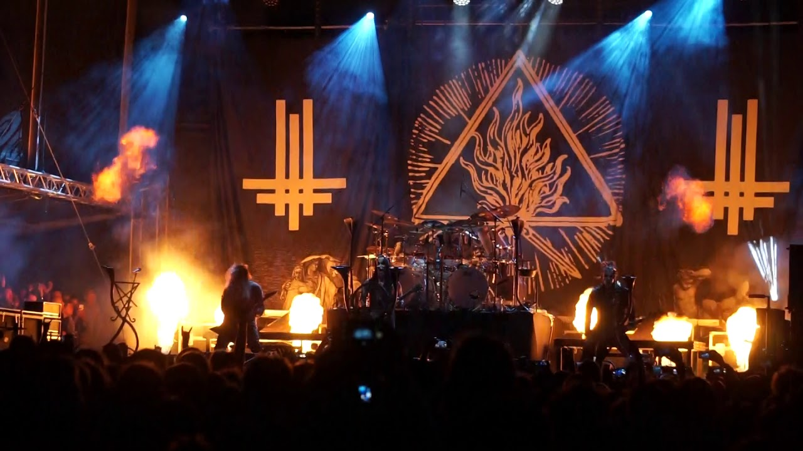
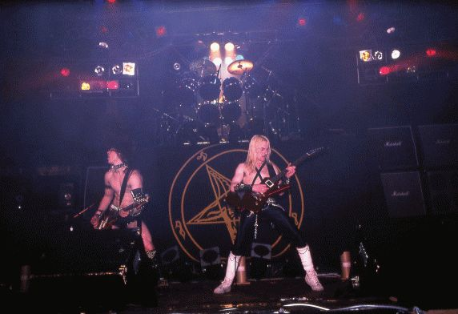
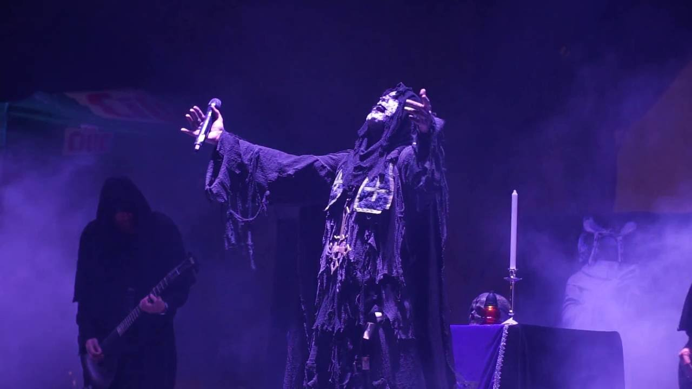
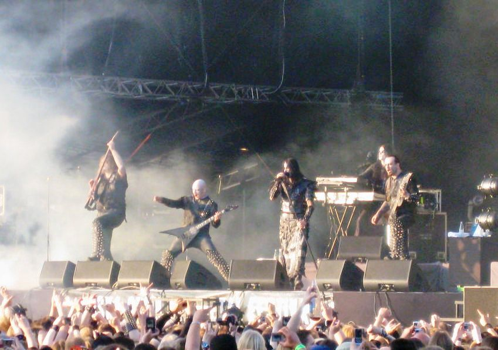

História do Black Metal:  Black metal é uma vertente extrema do heavy metal que surgiu nos anos 80 e que foi evoluindo ao longo dos anos. A música é caracterizada por andamentos rápidos, vocais rasgados, vocais guturais, guitarras altamente distorcidas tocadas em tremolo picking, uso de blast beats pela bateria, álbuns com produção lo-fi e estruturas sonoras não-convencionais. É um estilo sombrio, cru e agressivo que incorpora em suas letras temas como satanismo, anticristianismo e paganismo, sendo considerado usualmente o gênero musical mais extremo. Além disso, músicos do gênero costumam usar corpse paint e pseudônimos. Durante os anos 1980, muitas bandas de thrash e death metal formaram o protótipo do black metal. Essa primeira onda do black metal inclui bandas como Venom, Hellhammer, Bathory, Celtic Frost e Mercyful Fate. Uma segunda onda surgiu no início dos anos 90, encabeçada por bandas norueguesas como Mayhem, Darkthrone, Burzum, Gorgoroth, Immortal e Emperor. A cena inicial do black metal norueguês desenvolveu o estilo de seus antecessores tornando-o um gênero distinto. Inspirados pela cena norueguesa, outros grupos surgiram pela Europa e América do Norte, embora alguns outros movimentos tenha criado seu próprio estilo. Algumas bandas proeminentes da Suécia criadas nessa época foram Marduk, Nifelheim e Dark Funeral. Inicialmente sinônimo de "metal satânico", o black metal é frequentemente recebido com hostilidade pela cultura mainstream, devido a ações e ideologias associadas a ele.[8] Muitos artistas expressam ideias anticristãs e misantropas, defendendo várias formas de satanismo ou paganismo étnico. Na década de 1990, membros da cena foram responsáveis por enxurrada de incêndios a igrejas e assassinatos. Há também um pequeno movimento neonazista dentro do black metal, mas este é rejeitado pela maioria dos músicos do estilo. Em suma, o black metal é direcionado para um público restrito de ouvintes e empenha-se para ser inacessível aos não-comprometidos. Seus Primórdios:  A primeira geração do black metal refere-se às bandas dos anos 80 que influenciaram a sonoridade e formaram um protótipo para o gênero. O termo "black metal" foi cunhado pela banda inglesa Venom cujo nome foi retirado de seu álbum Black Metal lançado em 1982. Apesar do álbum ser considerado thrash metal pelos padrões modernos, apresentava mais temas e imagens centradas no anticristianismo e no satanismo do que qualquer outro da época. Os membros do Venom costumavam adotar pseudônimos, uma prática que se tornou comum entre vários os músicos do black metal. Outra banda pioneira do black metal foi a sueca Bathory, liderada por Thomas Forsberg (sob o pseudônimo de Quorthon). A banda apresentou este estilo em seus primeiros quatro álbuns, porém no início da década de 1990 tornou-se pioneira do estilo que hoje é conhecido como viking metal. King Diamond e Sarcófago teriam sido os primeiros músicos da cena a utilizarem o "corpse paint". Algumas bandas nos anos 70 que fizeram referência ao lado obscuro da vida não são enquadradas neste estilo, porém influenciaram bandas precursoras do gênero. Alguns consideram que as bandas precursoras fizeram parte da primeira onda do black metal, sendo alguns dos álbuns mais significativos desta onda: Black Metal - Venom, The Return e Under the Sign of the Black Mark - Bathory, Melissa - Mercyful Fate, Apocalyptic Raids - Hellhammer e Morbid Tales - Celtic Frost. Diversas bandas desta mesma época como Slayer, Possessed e Destruction usaram temas satânicos em suas letras, embora suas sonoridades fossem bem diferentes do black metal. Estas bandas ajudaram a forjar a base do que viria a ser o black metal moderno que passou a existir de forma mais sólida a partir da segunda onda de black metal. Início dos anos 90 (segunda geração)  O estilo teve um grande crescimento no início dos anos 90 com a chamada "segunda onda de Black Metal". O ano de 1991 viu os lançamentos dos primeiros discos dessa leva: Worship Him - Samael, o EP Passage to Arcturo do Rotting Christ, Oath of the Black Blood do Beherit e Inri da consagrada banda brasileira Sarcófago. Foi depois desses lançamentos que bandas da Noruega como Burzum, Darkthrone, Emperor, Mayhem e Immortal contribuíram para tornar o black metal conhecido por todo o mundo. Suas letras falavam de temas pagãos, satânicos, anticristãos e ocultos em geral. Além do aspecto musical, as bandas retomaram o uso das pinturas faciais que passaram a ser chamadas de pinturas de guerra ("warpaint") ou mais comumente "corpse paint" (pintura de cadáver). Alguns dos álbuns deste período foram: Fuck Me Jesus do Marduk, Det Som Engang Var e Filosofem do Burzum, A Blaze in the Northern Sky do Darkthrone, Pure Holocaust do Immortal, De Mysteriis Dom Sathanas do Mayhem e In the Nightside Eclipse do Emperor. Entre os anos de 1991 a 1994 ocorreram incidentes polêmicos ligados ao black metal, envolvendo principalmente a cena norueguesa, como queima de igrejas, assassinatos e violações de túmulos, que indiretamente contribuíram para a divulgação do gênero pelo mundo. Nesta mesma época começam a ser criados inúmeros subgêneros do black metal. Do final dos anos 90 até hoje (terceira geração)  Durante os últimos anos da década de 1990, o "black metal" ganhou maior notoriedade na mídia através de bandas como Dimmu Borgir, que possui uma sonoridade já afastada dos padrões do black metal. Estas bandas logo começaram a ser consideradas black metal melódico ou symphonic black metal, pelo uso intensivo de teclados e elementos de música clássica. Os EUA têm uma pequena quantidade de bandas de black metal. O movimento estadunidense de black metal é por vezes chamado de USBM. Esse movimento ainda não ganhou uma forma muito clara, mas os grupos mais conhecidos são Absu, Judas Iscariot e Averse Sefira, todos com fortes influências do estilo death metal. Estas bandas fazem parte da chamada terceira onda de black metal, que contempla o black metal contemporâneo. Algumas Bandas que Você deve conhecer: Formulario de pesquisa: O que você está achando sobre este site? Ajude-nos a melhorar CLIQUE AQUI Fonte: Data: 15/03/2021 – Segunda - feira Horário: 15:27:27 Criado e Desenvolvido por: Pedro Rammé Figueira